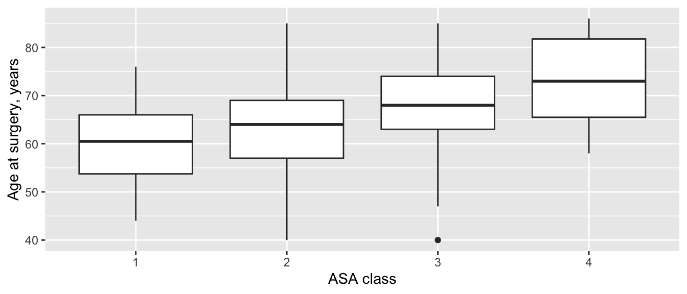

8 · Drei oder mehr unabhängige Gruppen vergleichen
Einfaktorielle ANOVA, Kruskal-Wallis-Test, Chi-Quadrat-Test und Cox-Regression: drei oder mehr Gruppen aus verschiedenen Patientinnen und Patienten.
Drei oder mehr Gruppen aus verschiedenen Patientinnen und Patienten: die vier ASA-Klassen, die drei Chirurginnen und Chirurgen, drei Arten von Transplantaten für das vordere Kreuzband (VKB), die Implantate A, B und C. Sie könnten jedes Gruppenpaar mit den Tests auf Seite 6 vergleichen, aber jeder zusätzliche Test ist eine weitere Gelegenheit für ein falsch positives Resultat. Die Tests auf dieser Seite stellen zuerst eine einzige Frage: Gibt es überhaupt einen Unterschied zwischen den Gruppen? Lautet die Antwort ja, zeigt Welche Gruppen unterscheiden sich? den nächsten Schritt.
Hinweis💡 So funktioniert jeder Abschnitt dieser Seite
Jeder Abschnitt beantwortet eine Frage zu einem der Übungsdatensätze: zur Gelenkersatz-Kohorte oder (beim Chi-Quadrat-Test) zu den VKB-Rekonstruktionen. Der erste Codeblock eines Abschnitts lädt die Packages und die Daten, sodass Sie direkt zum gewünschten Abschnitt springen können. Führen Sie die Blöcke eines Abschnitts der Reihe nach von oben nach unten aus.
Damit der Code kurz bleibt, verwenden die Beispiele zum Gelenkersatz alle Fälle, auch beide Fälle von Patientinnen und Patienten, die auf beiden Seiten operiert wurden (80 Personen in der ganzen Kohorte; Seite 2 zählt sie). Entscheiden Sie in einer echten Studie, wie Sie mit ihnen umgehen (Seite 3), und halten Sie fest, was Sie getan haben.
Einfaktorielle ANOVA
Die Frage: Unterscheidet sich das Alter bei der Operation zwischen den ASA-Klassen 1 bis 4?
Wann verwenden
Die Zielgrösse ist ein Messwert, der zwischen drei oder mehr unabhängigen Gruppen verglichen wird.
Innerhalb jeder Gruppe ist sie ungefähr normalverteilt, oder jede Gruppe ist ausreichend gross und nicht stark schief (Seite 3).
Die Gruppen haben ähnliche Streuungen: Als Faustregel ist die grösste Standardabweichung (SD) höchstens etwa doppelt so gross wie die kleinste. Ist das nicht der Fall, verwenden Sie die Welch-ANOVA (siehe den Kasten «R oder Python»), besonders bei ungleich grossen Gruppen.
Ist die Zielgrösse schief, begrenzt oder ordinal → verwenden Sie den Kruskal-Wallis-Test.
Was der Test wirklich macht
Die ANOVA vergleicht die Mittelwerte der Gruppen, indem sie zwei Arten von Variation vergleicht. Daher ihr Name: Varianzanalyse.
Zwischen den Gruppen. Den Abstand jedes Gruppenmittelwerts vom Gesamtmittelwert (dem Mittelwert aller) nehmen, quadrieren und für jede Person der Gruppe einmal zählen. Alles addieren: die Quadratsumme zwischen den Gruppen.
Innerhalb der Gruppen. Den Abstand jedes einzelnen Werts vom Mittelwert der eigenen Gruppe nehmen, quadrieren und alles addieren: die Quadratsumme innerhalb der Gruppen. Das ist das Rauschen: Patientinnen und Patienten unterscheiden sich auch dann, wenn sie zur selben Gruppe gehören.
Jede Quadratsumme durch ihre Freiheitsgrade teilen: bei der ersten die Anzahl Gruppen minus 1, bei der zweiten die Anzahl Personen minus die Anzahl Gruppen. Das ergibt zwei Varianzen, die mittleren Quadrate.
Teilen: F = mittleres Quadrat zwischen den Gruppen ÷ mittleres Quadrat innerhalb der Gruppen. Hätte jede Gruppe in Wahrheit denselben Mittelwert, würden sich die Gruppenmittelwerte nur so stark unterscheiden, wie das Rauschen es bewirkt, und F läge nahe bei 1. F in einen p-Wert umrechnen: die Wahrscheinlichkeit für ein F, das mindestens so gross ist, wenn jede Gruppe in Wahrheit denselben Mittelwert hätte.
Nach dem Test rechnet ein Kasten unter «Ausgabe lesen» F von Hand nach.
library(tidyverse)cohort <-read_csv("data/cohort.csv", show_col_types =FALSE) |>mutate(asa =factor(asa)) # die ASA-Klasse ist eine Gruppe, keine Zahlggplot(cohort, aes(asa, age)) +geom_boxplot() +labs(x ="ASA class", y ="Age at surgery, years")

cohort |>group_by(asa) |>summarise(n =n(), mean =mean(age), sd =sd(age))
import pandas as pdimport pingouin as pgimport matplotlib.pyplot as pltfrom scipy import statscohort = pd.read_csv("data/cohort.csv")ages = [group["age"] for asa, group in cohort.groupby("asa")] # eine Liste mit den Altersangaben pro ASA-Klassefig, ax = plt.subplots(figsize=(6, 3))parts = ax.boxplot(ages, tick_labels=["1", "2", "3", "4"]) # mit einem Namen für den Rückgabewert erscheint er nicht in der Ausgabeax.set_xlabel("ASA class")ax.set_ylabel("Age at surgery, years")plt.show()
Das Alter steigt mit der ASA-Klasse stetig an. Die Standardabweichungen liegen alle nahe bei 9 Jahren, die Streuungen sind also ähnlich. Die Gruppen sind jedoch sehr unterschiedlich gross: 300 Eingriffe bei ASA 2, nur 18 bei ASA 4.
Source SS DF MS F p_unc np2
0 asa 5726.693008 3 1908.897669 23.901792 1.284107e-14 0.107391
1 Within 47599.066992 596 79.864206 NaN NaN NaN
Ausgabe lesen
Zeile asa: die Variation zwischen den Gruppenmittelwerten. Df = 3 (vier Gruppen minus eins), Sum Sq = 5727 (in Python DF und SS).
Residuals (R) oder Within (Python): die Variation der Patientinnen und Patienten innerhalb ihrer Gruppen. Df = 596 (600 Eingriffe, die Summe der Spalte n oder count oben, minus vier Gruppen), Sum Sq = 47599.
Mean Sq (in Python MS): jede Sum Sq geteilt durch ihre Df. Das ergibt 1908.9 zwischen den Gruppen (5727 ÷ 3; R hat die ausgegebene Zahl 5727 gerundet, Python zeigt 5726.69) und 79.9 innerhalb der Gruppen (47599 ÷ 596).
F = 23.9: die erste Mean Sq geteilt durch die zweite, 1908.9 ÷ 79.9. Hätten die Gruppen denselben Mittelwert, läge F nahe bei 1.
p < 0.001: Gruppenmittelwerte, die sich so stark unterscheiden, wären sehr unwahrscheinlich, wenn jede ASA-Klasse dasselbe mittlere Alter hätte. R gibt den p-Wert als 1.28e-14 unter Pr(>F) aus, Python als 1.284107e-14 unter p_unc. Das ist die wissenschaftliche Schreibweise: e-14 bedeutet «den Dezimalpunkt um 14 Stellen nach links verschieben».
np2 = 0.107 (nur Python): Eta-Quadrat (η²), der Anteil der gesamten Variation, der zwischen den Gruppen liegt, 5727 ÷ (5727 + 47599). Der Name in pingouin steht für «partielles Eta-Quadrat»; bei nur einer Gruppierungsvariable ist das dieselbe Zahl. Der nächste Schritt korrigiert sie leicht.
Die ersten beiden Zahlen sind die Spalte Sum Sq der ANOVA-Tabelle (in Python SS), 5727 und 47599; die nächsten beiden sind ihre Spalte Mean Sq (MS), 1908.9 und 79.9. Ihr Verhältnis ist das F = 23.9, das der Test ausgegeben hat. Das mittlere Quadrat innerhalb der Gruppen ist eine Varianz, seine Wurzel also eine Standardabweichung: √79.9 = 8.9 Jahre, die typische Streuung des Alters innerhalb einer Klasse. Das passt zu den Standardabweichungen von etwa 9 in der Tabelle unter «Zuerst die Daten ansehen».
Effektstärke und 95%-KI
Omega-Quadrat (ω²) ist der Anteil der Variation des Alters, den die ASA-Klasse erklärt, korrigiert um die leichte systematische Überschätzung des einfacheren Eta-Quadrats (η²). Als grobe Richtschnur: 0.01 ist klein, 0.06 mittel und 0.14 gross.
# Effect Size for ANOVA (Type I)
Parameter | Omega2 | 95% CI
---------------------------------
asa | 0.10 | [0.06, 1.00]
- One-sided CIs: upper bound fixed at [1.00].
# Omega-Quadrat aus der ANOVA-Tabelle: (SS zwischen - df zwischen × MS innerhalb) / (SS total + MS innerhalb)ss_between, ss_within = age_anova.loc[0, "SS"], age_anova.loc[1, "SS"]df_between, ms_within = age_anova.loc[0, "DF"], age_anova.loc[1, "MS"]omega2 = (ss_between - df_between * ms_within) / (ss_between + ss_within + ms_within)print(omega2)
0.10274386772151635
ω² = 0.10: Die ASA-Klasse erklärt etwa ein Zehntel der Variation des Alters, ein mittlerer Effekt. R gibt ausserdem ein einseitiges 95%-KI (Konfidenzintervall) aus (0.06 bis 1.00): ω² kann nicht negativ sein, daher ist nur die untere Grenze aussagekräftig. scipy und pingouin berechnen dieses KI nicht. Die ANOVA sagt nicht, welche Klassen sich unterscheiden: siehe Welche Gruppen unterscheiden sich?.
Resultate formulieren
Methods: Age was compared across ASA classes with one-way analysis of variance (ANOVA), with omega squared (ω²) as the effect size.
Results: Mean age was 59.8 years (SD 8.7) in ASA 1 and 73.7 years (SD 9.3) in ASA 4 (one-way ANOVA, F(3, 596) = 23.9, p < 0.001; ω² = 0.10, one-sided 95% CI 0.06 to 1.00).
Warnung⚠️ Achtung: Die ANOVA sagt nicht, welche Gruppen sich unterscheiden
Eine signifikante ANOVA bedeutet, dass sich mindestens ein Gruppenmittelwert von einem anderen unterscheidet, nicht, dass sich jede Gruppe von jeder anderen unterscheidet. Schliessen Sie keine Reihe unadjustierter t-Tests an: Damit kehrt das Problem der falsch positiven Resultate zurück, das die ANOVA vermeiden sollte. Verwenden Sie einen Post-hoc-Test (Seite 15).
Tipp🔀 R oder Python: klassische ANOVA oder Welch-ANOVA
Die klassische ANOVA setzt voraus, dass die Gruppen dieselbe Streuung haben. aov() in R, f_oneway() in scipy und anova() in pingouin führen sie standardmässig aus.
Die Welch-ANOVA setzt gleiche Streuungen nicht voraus. oneway.test() in R führt standardmässig die Welch-Version aus (für die klassische Version ergänzen Sie var.equal = TRUE), also das Gegenteil von aov(). In Python verwenden Sie pg.welch_anova() oder stats.f_oneway(..., equal_var=False).
Hier sind die Standardabweichungen ähnlich, und die Welch-ANOVA stimmt überein: F = 23.5 (klassisch: 23.9), p < 0.001 (R gibt 3.49e-10 aus). Anstelle von 596 werden ihre zweiten Freiheitsgrade aus den Daten geschätzt: 60.3 (denom df in R, ddof2 in Python).
Kruskal-Wallis-Test
Die Frage: Unterscheidet sich die Zufriedenheit 1 Jahr nach der Operation zwischen den Chirurginnen und Chirurgen S1, S2 und S3?
Wann verwenden
Die Zielgrösse ist ordinal (Zufriedenheit von 1 bis 5), schief oder hat einen Decken- oder Bodeneffekt und wird zwischen drei oder mehr unabhängigen Gruppen verglichen.
Wie der Mann-Whitney-Test arbeitet er mit Rängen: Er fragt, ob die Werte in einigen Gruppen tendenziell grösser sind als in anderen.
Bei zwei Gruppen liefert er im Wesentlichen dasselbe Resultat wie der Mann-Whitney-Test.
Ist die Zielgrösse ein ungefähr normalverteilter Messwert → verwenden Sie die einfaktorielle ANOVA.
Was der Test wirklich macht
Der Kruskal-Wallis-Test macht für drei oder mehr Gruppen, was der Mann-Whitney-Test für zwei macht: Er lässt die Scores beiseite und arbeitet mit ihrer Reihenfolge.
Alle Scores aller Gruppen vom tiefsten zum höchsten in eine Reihe stellen und jedem seine Position in dieser Reihe geben: seinen Rang. Gebundene Scores teilen sich den Mittelwert ihrer Positionen.
Für jede Gruppe den mittleren Rang berechnen.
Würden sich die Gruppen nicht unterscheiden, läge der mittlere Rang jeder Gruppe nahe beim Mittelwert aller Ränge; das ist (n + 1) ÷ 2 bei n Scores.
Die Teststatistik, H, misst, wie weit die mittleren Ränge der Gruppen von diesem Gesamtmittelwert der Ränge entfernt sind: Jeder Abstand wird quadriert und für jede Person der Gruppe einmal gezählt, dann wird alles addiert und skaliert. H ist 0, wenn alle mittleren Ränge gleich sind, und umso grösser, je weiter sie auseinanderliegen. Je grösser H, desto kleiner der p-Wert.
Nach dem Test rechnet ein Kasten unter «Ausgabe lesen» H von Hand nach.
library(tidyverse)cohort <-read_csv("data/cohort.csv", show_col_types =FALSE)satisfied <- cohort |>filter(!is.na(satisfaction_1yr)) # nur die Eingriffe mit einem Zufriedenheitsscorec(all =nrow(cohort), answered =nrow(satisfied)) # alle Eingriffe und diejenigen mit einem Score
all answered
600 502
cohort |>group_by(surgeon) |>summarise(procedures =n(), answered =sum(!is.na(satisfaction_1yr))) # dieselben zwei Anzahlen pro Chirurgin oder Chirurg
import pandas as pdfrom scipy import statscohort = pd.read_csv("data/cohort.csv")satisfied = cohort.dropna(subset=["satisfaction_1yr"]) # nur die Eingriffe mit einem Zufriedenheitsscoreprint(len(cohort), len(satisfied)) # alle Eingriffe und diejenigen mit einem Score
600 502
print(cohort.groupby("surgeon")["satisfaction_1yr"].agg(["size", "count"])) # pro Chirurgin oder Chirurg: size zählt die Eingriffe, count die Scores
Die Zufriedenheit wurde bei 502 der 600 Eingriffe angegeben (die erste Ausgabe): bei 192 von 232 für S1, 177 von 211 für S2 und 133 von 157 für S3. Bei jeder Chirurgin und jedem Chirurgen waren die meisten zufrieden (4) oder sehr zufrieden (5), und die drei Verteilungen sehen sich sehr ähnlich.
satisfaction_test <-kruskal.test(satisfaction_1yr ~ surgeon, data = satisfied)satisfaction_test
Kruskal-Wallis rank sum test
data: satisfaction_1yr by surgeon
Kruskal-Wallis chi-squared = 0.67685, df = 2, p-value = 0.7129
scores = [group["satisfaction_1yr"] for surgeon, group in satisfied.groupby("surgeon")] # eine Liste pro Chirurgin oder Chirurgsatisfaction_test = stats.kruskal(*scores)print(satisfaction_test)
Kruskal-Wallis chi-squared = 0.68 (R) oder statistic (Python): die H-Statistik. Sie misst, wie weit die mittleren Ränge der Gruppen auseinanderliegen. Beide Programme korrigieren sie für die vielen gebundenen Scores. R nennt sie «chi-squared», weil H mit der Chi-Quadrat-Verteilung in einen p-Wert umgerechnet wird.
df = 2: drei Gruppen minus eins.
p = 0.713: Unterschiede in der Zufriedenheit, die so gross oder grösser sind, wären sehr häufig, wenn die Patientinnen und Patienten aller Chirurginnen und Chirurgen gleich zufrieden wären.
ranks <-rank(satisfied$satisfaction_1yr) # Schritt 1: alle 502 Scores gemeinsam in Ränge umwandeln; gebundene Scores teilen sich den mittleren Rangn_scores <-length(ranks)mean_ranks <-tapply(ranks, satisfied$surgeon, mean) # Schritt 2: der mittlere Rang pro Chirurgin oder Chirurggroup_sizes <-tapply(ranks, satisfied$surgeon, length)mean_ranks
S1 S2 S3
248.0052 249.2090 259.5940
(n_scores +1) /2# Schritt 3: der Mittelwert aller Ränge
[1] 251.5
h_no_ties <-12/ (n_scores * (n_scores +1)) *sum(group_sizes * (mean_ranks - (n_scores +1) /2)^2) # Schritt 4: H, vor der Korrektur für Bindungentie_sizes <-table(satisfied$satisfaction_1yr) # wie viele Eingriffe denselben Score habentie_correction <-1-sum(tie_sizes^3- tie_sizes) / (n_scores^3- n_scores) # der Korrekturfaktor für Bindungenc(h_no_ties = h_no_ties, tie_correction = tie_correction, h = h_no_ties / tie_correction)
h_no_ties tie_correction h
0.5696735 0.8416498 0.6768534
ranks = satisfied["satisfaction_1yr"].rank() # Schritt 1: alle 502 Scores gemeinsam in Ränge umwandeln; gebundene Scores teilen sich den mittleren Rangn_scores =len(ranks)mean_ranks = ranks.groupby(satisfied["surgeon"]).mean() # Schritt 2: der mittlere Rang pro Chirurgin oder Chirurggroup_sizes = ranks.groupby(satisfied["surgeon"]).size()print(mean_ranks)
Die mittleren Ränge sind 248.0 (S1), 249.2 (S2) und 259.6 (S3), alle nahe beim Gesamtmittelwert der Ränge von 251.5; H beträgt daher nur 0.57. Bei nur fünf möglichen Scores ist fast jeder Score mit vielen anderen gebunden (250 Eingriffe haben den Score 5), und Bindungen machen H zu klein. Beide Programme teilen H deshalb durch einen Korrekturfaktor, hier 0.84; das ergibt das ausgegebene H = 0.68.
Effektstärke und 95%-KI
Epsilon-Quadrat (ε²) ist das rangbasierte Gegenstück zu ω²: der Anteil der Variation der Ränge, den die Gruppen erklären, von 0 bis 1. Es ist H geteilt durch (n − 1).
set.seed(2026) # sein KI stammt aus einem Bootstrap (zufälliges Neuziehen); mit einem Seed ist es wiederholbareffectsize::rank_epsilon_squared(satisfaction_1yr ~ surgeon, data = satisfied)
Epsilon2 (rank) | 95% CI
------------------------------
1.35e-03 | [0.00, 1.00]
- One-sided CIs: upper bound fixed at [1.00].
ε² = 0.001: H geteilt durch n − 1 ist 0.677 ÷ 501 = 0.00135. R gibt das als 1.35e-03 aus, die wissenschaftliche Schreibweise derselben Zahl: Der Dezimalpunkt rückt 3 Stellen nach links. Die Chirurgin oder der Chirurg erklärt im Wesentlichen nichts von der Variation der Zufriedenheit. Das einseitige KI von R reicht von 0.00 bis 1.00; es stammt aus einem Bootstrap, weshalb der Code einen Seed setzt. scipy hat dafür keine Funktion.
Resultate formulieren
Methods: Satisfaction at 1 year (a 5-point ordinal scale) was compared across surgeons with the Kruskal-Wallis test, with epsilon squared (ε²) as the effect size.
Results: Of 600 procedures, 502 had a satisfaction score at 1 year: 192 of 232 for surgeon S1, 177 of 211 for S2 and 133 of 157 for S3. The median was 4 (IQR 4 to 5) for surgeon S1 and 5 (IQR 4 to 5) for surgeons S2 and S3 (Kruskal-Wallis H = 0.68, df = 2, p = 0.713; ε² = 0.001, one-sided 95% CI 0.00 to 1.00).
Warnung⚠️ Achtung: Fehlende Antworten fehlen nicht zufällig
Bei 98 Eingriffen fehlt die Zufriedenheit (600 − 502). Wenn unzufriedene Patientinnen und Patienten seltener geantwortet haben, erscheinen alle Chirurginnen und Chirurgen besser, als sie sind, und auch der Vergleich kann verzerrt sein. Berichten Sie immer, wie viele Personen in jeder Gruppe geantwortet haben, wie im Results-Satz oben, und prüfen Sie, ob sich der Anteil der Personen ohne Antwort zwischen den Gruppen unterscheidet. Hier ist das kaum der Fall: Bei 192 ÷ 232 = 83 %, 177 ÷ 211 = 84 % und 133 ÷ 157 = 85 % der Eingriffe liegt ein Score vor.
Tipp🔀 R oder Python: Bindungen und Datenformat
kruskal.test() und stats.kruskal() korrigieren H beide für Bindungen, stimmen also auch bei einer 5-Punkte-Skala voller gebundener Scores überein. R nimmt eine Formel (outcome ~ group); scipy nimmt pro Gruppe eine Liste mit Werten, weshalb der Python-Code zuerst scores aufbaut.
Chi-Quadrat-Test
Die Frage: Unterscheidet sich die Rückkehr zum Sport 12 Monate nach einer VKB-Rekonstruktion zwischen Knochen-Patellarsehnen-Knochen-Transplantaten (BPTB), Hamstring-Transplantaten und Quadrizepssehnen-Transplantaten?
Wann verwenden
Die Zielgrösse ist kategorial (hier Ja/Nein) und wird zwischen drei oder mehr unabhängigen Gruppen verglichen: eine r × c-Tabelle.
Jede erwartete Häufigkeit sollte mindestens 5 betragen. Fassen Sie sonst Kategorien zusammen, die inhaltlich zusammenpassen, oder verwenden Sie den exakten Test nach Fisher; fisher.test() in R führt ihn auch bei grösseren Tabellen exakt aus. stats.fisher_exact() in scipy akzeptiert zwar grössere Tabellen, schätzt deren p-Wert aber durch zufälliges Neuziehen, sodass er sich von Durchlauf zu Durchlauf etwas ändert, wenn Sie keinen Seed angeben.
Der Chi-Quadrat-Test vergleicht die beobachtete Tabelle mit der Tabelle, die zu erwarten wäre, wenn die Rückkehr zum Sport nichts mit dem Transplantat zu tun hätte. Er funktioniert wie bei einer 2 × 2-Tabelle (Seite 6), nur mit mehr Zellen.
Für jede der sechs Zellen die erwartete Häufigkeit berechnen: Zeilensumme × Spaltensumme ÷ Gesamtsumme. So viele Fälle wären zu sehen, wenn die Rate der Rückkehr zum Sport mit jedem Transplantat gleich wäre.
Für jede Zelle (beobachtet − erwartet)² ÷ erwartet berechnen und die sechs Ergebnisse addieren. Die Summe ist die Teststatistik, χ²: 0, wenn die Tabelle genau den erwarteten Häufigkeiten entspricht, und umso grösser, je weiter sie davon entfernt ist.
χ² mit der Chi-Quadrat-Verteilung in einen p-Wert umrechnen. Dieser Schritt ist eine Näherung, und eine schlechte, wenn erwartete Häufigkeiten klein sind. Daher kommt die Regel «mindestens 5».
Der Test gibt eine einzige Antwort für die ganze Tabelle: Er sagt nicht, welche Transplantate sich unterscheiden. Nach dem Test rechnet ein Kasten unter «Ausgabe lesen» χ² von Hand nach.
Zuerst die Daten ansehen
Die VKB-Daten enthalten eine Zeile pro primärer Rekonstruktion; rts_12mo ist 1, wenn die Person 12 Monate nach der Operation wieder ihre Sportart von vor der Verletzung ausübte.
Jede Zeile ergibt die Gesamtzahl des Transplantats: 84 + 45 = 129 BPTB-, 67 + 87 = 154 Hamstring- und 22 + 45 = 67 Quadrizepssehnen-Rekonstruktionen, insgesamt 350. Die zweite Tabelle teilt jede Anzahl durch ihre Zeilensumme: 84 ÷ 129 = 0.651. Nach 12 Monaten waren also 65.1 % der BPTB-Rekonstruktionen, 43.5 % der Hamstring- und 32.8 % der Quadrizepssehnen-Rekonstruktionen wieder bei ihrer Sportart.
Erwartete Häufigkeiten: was jede Zelle enthielte, wenn die Rückkehr zum Sport mit jedem Transplantat gleich wäre. Die kleinste ist 33.1, der Test ist also zulässig.
X-squared = 22.24, df = 2 (die ersten beiden Zahlen in der letzten Zeile von Python): die Chi-Quadrat-Statistik, mit (3 Transplantate − 1) × (2 Ausgänge − 1) = 2 Freiheitsgraden.
p < 0.001: So grosse Unterschiede wären sehr unwahrscheinlich, wenn alle drei Transplantate dieselbe Rate der Rückkehr zum Sport hätten. R gibt p-value = 1.481e-05 aus; in der letzten Zeile von Python ist es die dritte Zahl. In der wissenschaftlichen Schreibweise rückt e-05 den Dezimalpunkt um 5 Stellen nach links: 0.0000148.
Die sechs Teile ergeben zusammen 22.24, das χ², das beide Programme ausgegeben haben. Am meisten trägt die Zeile BPTB bei (6.4 und 6.3): 84 BPTB-Rekonstruktionen waren wieder bei ihrer Sportart, wo 63.8 zu erwarten waren. Die Zeile Hamstring liegt nahe bei ihren erwarteten Häufigkeiten und trägt wenig bei (1.1 und 1.1). Das zeigt, wo die Tabelle am stärksten von den erwarteten Häufigkeiten abweicht; es ist kein Test dafür, welche Transplantate sich unterscheiden.
Effektstärke und 95%-KI
Cramérs V misst die Stärke des Zusammenhangs in einer Tabelle, von 0 (keiner) bis 1 (perfekt). Es ist √(χ² ÷ (n × (k − 1))), wobei n die Anzahl Rekonstruktionen ist und k die kleinere der beiden Zahlen Zeilenanzahl und Spaltenanzahl: hier √(22.24 ÷ (350 × 1)) = 0.25. Bei einer Tabelle mit 2 Spalten ist etwa 0.1 klein, 0.3 mittel und 0.5 gross.
effectsize::cramers_v(rts_table, adjust =FALSE) # siehe den Kasten «R oder Python»
Cramer's V | 95% CI
-------------------------
0.25 | [0.16, 1.00]
- One-sided CIs: upper bound fixed at [1.00].
effectsize::cramers_v(rts_table) # die Standardeinstellung, mit einer Korrektur: etwas kleiner
Cramer's V (adj.) | 95% CI
--------------------------------
0.24 | [0.14, 1.00]
- One-sided CIs: upper bound fixed at [1.00].
print(association(rts_table, method="cramer"))
0.25208169478915055
V = 0.25, ein Zusammenhang zwischen klein und mittel (die zweite Ausgabe von R, mit dem Titel Cramer's V (adj.), erklärt der Kasten «R oder Python»). R gibt ausserdem ein einseitiges 95%-KI aus, 0.16 bis 1.00; scipy berechnet keines. Bei Ja/Nein-Zielgrössen ist die Rate in jeder Gruppe (mit ihrem KI, wie auf Seite 4) meist aussagekräftiger als V. Und bedenken Sie, was der Test nicht sagt: welche Transplantate sich unterscheiden (siehe unten Welche Gruppen unterscheiden sich?) und warum. Die Transplantate wurden nicht zufällig zugeteilt, ein Unterschied kann also von den Patientinnen und Patienten statt vom Transplantat kommen; Seite 12 zeigt, wie Sie für andere Faktoren adjustieren.
Resultate formulieren
Methods: Return to sport at 12 months was compared across graft types with the chi-square test, with Cramér’s V as the effect size.
Results: Return to sport at 12 months followed 84 of 129 BPTB reconstructions (65.1%), 67 of 154 hamstring reconstructions (43.5%) and 22 of 67 quadriceps reconstructions (32.8%) (χ² = 22.24, df = 2, p < 0.001; Cramér’s V = 0.25, one-sided 95% CI 0.16 to 1.00).
Warnung⚠️ Achtung: Hier gibt es keine Yates-Korrektur, und prüfen Sie die erwarteten Häufigkeiten
Die Stetigkeitskorrektur nach Yates (Seite 6) gilt nur für 2 × 2-Tabellen, beide Programme verzichten bei dieser 3 × 2-Tabelle also darauf. Die Regel für die erwarteten Häufigkeiten gilt weiterhin: Übung 3 zeigt eine Tabelle, die sie verletzt, und was dann zu tun ist.
Tipp🔀 R oder Python: zwei Versionen von Cramérs V
cramers_v() aus effectsize wendet standardmässig eine Korrektur der systematischen Abweichung bei kleinen Stichproben an: Das ist die zweite Ausgabe von R oben, 0.24, mit dem Titel Cramer's V (adj.). association() aus scipy tut das nicht (0.25). Wir setzen in R adjust = FALSE, damit beide übereinstimmen. Beides ist zulässig; geben Sie an, welche Version Sie berichten.
Cox-Regression
Die Frage: Unterscheidet sich das Revisionsrisiko zwischen den Implantaten A, B und C?
Wann verwenden
Die Zielgrösse ist die Zeit bis zu einem Ereignis (Revision), verglichen zwischen drei oder mehr unabhängigen Gruppen.
Der Log-Rank-Test lässt sich auf drei oder mehr Gruppen erweitern und beantwortet die Frage «Unterscheiden sich die Kurven?». Die Cox-Regression liefert zusätzlich für jede Gruppe ein Hazard Ratio (HR) gegenüber einer Referenzgruppe und kann für andere Variablen adjustieren.
Sie setzt voraus, dass der Hazard jeder Gruppe über die Zeit ein gleichbleibendes Vielfaches des Hazards der Referenzgruppe ist (proportionale Hazards; der Hazard ist die momentane Ereignisrate). Seite 14 zeigt, wie Sie das prüfen, und behandelt die Cox-Regression ausführlich.
Was der Test wirklich macht
Die Cox-Regression verfolgt die Gruppen über die ganze Nachbeobachtung, eine Revision nach der anderen, wie der Log-Rank-Test. Zusätzlich schätzt sie, wie gross der Unterschied zwischen den Gruppen ist.
Bei der Operation beginnen und in der Zeit vorwärtsgehen. Bei jeder Revision schauen, wer unmittelbar davor noch nachbeobachtet wurde: die Personen unter Risiko.
Angenommen, der Hazard mit Implantat C wäre doppelt so hoch wie mit Implantat A. Dann würde die Revision in diesem Moment jede Person unter Risiko mit Implantat C doppelt so wahrscheinlich treffen wie jede Person unter Risiko mit Implantat A.
Das Modell probiert Werte für das Hazard Ratio jedes Implantats gegenüber der Referenzgruppe aus und behält diejenigen, unter denen die tatsächlich eingetretenen Revisionen zusammengenommen am wahrscheinlichsten waren.
Der Gesamttest vergleicht diese beste Anpassung mit einem Modell, in dem jedes Hazard Ratio 1 ist, also ohne Unterschied zwischen den Implantaten. Je stärker die Hazard Ratios die Anpassung verbessern, desto grösser die Teststatistik und desto kleiner der p-Wert.
Das Modell muss nur wissen, wie sich die Hazards der Gruppen zueinander verhalten, nie den Hazard selbst. Es lässt daher offen, wie sich das Revisionsrisiko über die Jahre verändert; es setzt nur voraus, dass die Hazards der Gruppen im selben Verhältnis bleiben (der dritte Punkt unter «Wann verwenden»). Wer die Studie früh verlässt, ist zensiert: Die Person zählt so lange zu den Personen unter Risiko, wie sie nachbeobachtet wurde, und danach nicht mehr. Nach dem Modell berechnet ein Kasten unter «Ausgabe lesen» die beobachteten und erwarteten Revisionen jedes Implantats von Hand.
implant_cox <-coxph(Surv(followup_years, revised) ~ implant, data = cohort) # Implantat A ist die Referenzsummary(implant_cox)
Call:
coxph(formula = Surv(followup_years, revised) ~ implant, data = cohort)
n= 600, number of events= 81
coef exp(coef) se(coef) z Pr(>|z|)
implantB -0.2020 0.8171 0.3092 -0.653 0.514
implantC 1.1208 3.0673 0.2579 4.345 1.39e-05 ***
---
Signif. codes: 0 '***' 0.001 '**' 0.01 '*' 0.05 '.' 0.1 ' ' 1
exp(coef) exp(-coef) lower .95 upper .95
implantB 0.8171 1.224 0.4458 1.498
implantC 3.0673 0.326 1.8502 5.085
Concordance= 0.659 (se = 0.03 )
Likelihood ratio test= 27.64 on 2 df, p=1e-06
Wald test = 29.63 on 2 df, p=4e-07
Score (logrank) test = 33.48 on 2 df, p=5e-08
implant_cox = CoxPHFitter().fit( cohort[["followup_years", "revised", "implant"]], duration_col="followup_years", event_col="revised", formula="implant", # Implantat A ist die Referenz fit_options={"precision": 1e-9}, # erst anhalten, wenn das Modell ganz konvergiert ist; siehe den Kasten «R oder Python»)print(implant_cox.summary[["exp(coef)", "exp(coef) lower 95%", "exp(coef) upper 95%", "p"]])
overall = implant_cox.log_likelihood_ratio_test() # Gesamttest, alle Implantateprint(overall.test_statistic, overall.degrees_freedom, overall.p_value) # seine Statistik, Freiheitsgrade und p-Wert
27.63546691821921 2 9.977795676697713e-07
print(multivariate_logrank_test(cohort["followup_years"], cohort["implant"], cohort["revised"]).test_statistic) # der Log-Rank-Test, alle Implantate
33.46861907356945
Ausgabe lesen
n = 600, number of events = 81 (R): 600 Eingriffe und 81 Revisionen.
exp(coef): das Hazard Ratio jedes Implantats gegenüber Implantat A, der Referenz. Implantat B: 0.82; Implantat C: 3.07.
lower .95 / upper .95: die 95%-KI. Dasjenige von Implantat B (0.45 bis 1.50) schliesst 1 ein, die Daten sind also mit keinem Unterschied zu A vereinbar. Dasjenige von Implantat C (1.85 bis 5.09) tut das nicht.
Pr(>|z|) (in Python p): der p-Wert für jedes Implantat gegenüber A (p = 0.514 für B, p < 0.001 für C). R gibt denjenigen von C als 1.39e-05 aus, die wissenschaftliche Schreibweise für 0.0000139; Python gibt 0.000014 aus.
Likelihood ratio test = 27.6 on 2 df, p < 0.001: der Gesamttest, ob das Implantat überhaupt eine Rolle spielt, das Cox-Gegenstück zum F-Test der ANOVA. R gibt 27.64 und p=1e-06 aus. Python gibt ihn in der ersten Zeile unter der Tabelle aus: die Statistik, ihre Freiheitsgrade und den p-Wert.
Score (logrank) test = 33.5: der Log-Rank-Test für alle drei Implantate, den Python in der letzten Zeile ausgibt (33.47; der Score-Test von R ergibt 33.48). Der Score-Test der Cox-Regression und der Log-Rank-Test behandeln gebundene Revisionszeitpunkte etwas verschieden, sie stimmen also auf eine Dezimalstelle überein, nicht exakt.
Der Rest der Ausgabe von R:exp(-coef) ist jedes Hazard Ratio umgekehrt, Implantat A gegenüber dem anderen Implantat (1 ÷ 0.8171 = 1.224). coef, se(coef), z, die Konkordanz und der Wald-Test werden auf Seite 14 erklärt; hier brauchen Sie sie nicht.
Hinweis🔍 Unter der Haube: beobachtete und erwartete Revisionen von Hand
revision_times <-sort(unique(cohort$followup_years[cohort$revised ==1])) # jeder Zeitpunkt, an dem eine Revision eintratexpected <-sapply(c(A ="A", B ="B", C ="C"), function(group) {sum(sapply(revision_times, function(time) { at_risk <- cohort$followup_years >= time # unmittelbar vor diesem Zeitpunkt noch nachbeobachtet revisions <-sum(cohort$followup_years == time & cohort$revised ==1) # Revisionen zu diesem Zeitpunkt (meist 1) revisions *sum(at_risk & cohort$implant == group) /sum(at_risk) # der erwartete Anteil dieses Implantats daran })) # über alle Zeitpunkte addiert})observed <-tapply(cohort$revised, cohort$implant, sum)rbind(observed, expected, ratio = observed / expected) # beobachtet, erwartet und ihr Verhältnis, pro Implantat
A B C
observed 25.0000000 18.0000000 38.000000
expected 34.0449534 30.0124455 16.942601
ratio 0.7343232 0.5997512 2.242867
revision_times =sorted(cohort.loc[cohort["revised"] ==1, "followup_years"].unique()) # jeder Zeitpunkt, an dem eine Revision eintratexpected = pd.Series({"A": 0.0, "B": 0.0, "C": 0.0})for time in revision_times: at_risk = cohort["followup_years"] >= time # unmittelbar vor diesem Zeitpunkt noch nachbeobachtet revisions = ((cohort["followup_years"] == time) & (cohort["revised"] ==1)).sum() # Revisionen zu diesem Zeitpunkt (meist 1)for group in expected.index: expected[group] += revisions * (at_risk & (cohort["implant"] == group)).sum() / at_risk.sum() # der erwartete Anteil dieses Implantats, aufaddiertobserved = cohort.groupby("implant")["revised"].sum()print(pd.DataFrame({"observed": observed, "expected": expected, "ratio": observed / expected}).T) # beobachtet, erwartet und ihr Verhältnis, pro Implantat
A B C
observed 25.000000 18.000000 38.000000
expected 34.044953 30.012446 16.942601
ratio 0.734323 0.599751 2.242867
Hätten alle drei Implantate dasselbe Risiko, hätten sich die 81 Revisionen so verteilt: 34.0 (A), 30.0 (B) und 16.9 (C). Implantat C hatte 38, mehr als das Doppelte seines Anteils; die Implantate A und B hatten 25 und 18, weniger als ihren Anteil. Der Log-Rank-Test, die Zeile «Score (logrank) test» oben, fragt, wie unwahrscheinlich so grosse Abstände durch Zufall wären. Die Zeile ratio teilt beobachtet durch erwartet: 0.73 für A, 0.60 für B und 2.24 für C. Der Vergleich dieser Verhältnisse gibt eine grobe Vorstellung von den Hazard Ratios: 2.24 ÷ 0.73 = 3.1 für C gegenüber A und 0.60 ÷ 0.73 = 0.8 für B gegenüber A. Das Cox-Modell schätzt sie richtig, mit 3.07 und 0.82.
Effektstärke und 95%-KI
Die Hazard Ratios mit ihren 95%-KI sind die Effektstärken: Mit Implantat C war der Hazard einer Revision etwa dreimal so hoch wie mit Implantat A (3.07, 95%-KI 1.85 bis 5.09), während sich Implantat B nicht deutlich von A unterschied (0.82, 95%-KI 0.45 bis 1.50).
Resultate formulieren
Methods: Revision-free survival was compared across implants with Cox proportional hazards regression, with implant A as the reference.
Results: Compared with implant A, the hazard ratio for revision was 3.07 (95% CI 1.85 to 5.09) for implant C and 0.82 (95% CI 0.45 to 1.50) for implant B (likelihood ratio test for implant type, χ² = 27.6, df = 2, p < 0.001).
Warnung⚠️ Achtung: Die Referenzgruppe prägt das Bild
Jedes Hazard Ratio hier bezieht sich auf Implantat A, die Ausgabe vergleicht B also nicht direkt mit C. Wählen Sie die Referenzgruppe bewusst (das Standardimplantat, die grösste Gruppe) und sagen Sie, welche es ist. Und wie auf Seite 4 gelten Todesfälle hier als zensiert; Seite 13 behandelt konkurrierende Risiken.
Tipp🔀 R oder Python: Konvergenz und Referenzgruppe
Beide Programme verwenden die alphabetisch erste Gruppe (A) als Referenz und behandeln gebundene Revisionszeitpunkte mit der Methode von Efron. Die Standard-Konvergenzregel von lifelines hört hier etwas zu früh auf, daher verschärfen wir sie mit fit_options={"precision": 1e-9}. So viel macht das aus:
exp(coef(implant_cox)) # die Hazard Ratios von R, mit mehr Dezimalstellen
implantB implantC
0.8170908 3.0673441
default_cox = CoxPHFitter().fit( cohort[["followup_years", "revised", "implant"]], duration_col="followup_years", event_col="revised", formula="implant", # ohne fit_options: die Standardregel von lifelines)print(default_cox.hazard_ratios_) # vergleichen Sie mit der Tabelle unter «Analyse durchführen»
Mit der Standardregel liefert lifelines für Implantat B ein Hazard Ratio von 0.817125, wo R 0.8170908 liefert. Mit der verschärften Regel sind es 0.817091, die Zahl in der Tabelle unter «Analyse durchführen».
Welche Gruppen unterscheiden sich?
Die obigen Tests beantworten die Frage «Gibt es überhaupt einen Unterschied zwischen den Gruppen?». Lautet die Antwort ja, ist die nächste Frage, welche Gruppen sich voneinander unterscheiden. Wenn Sie jedes Paar mit einem gewöhnlichen Test vergleichen, steigt die Wahrscheinlichkeit eines falsch positiven Resultats. Bei vier ASA-Klassen gibt es sechs Paare (1 und 2, 1 und 3, 1 und 4, 2 und 3, 2 und 4, 3 und 4). Jeder Test auf dem 5%-Niveau hat eine Wahrscheinlichkeit von 95 %, keinen Fehlalarm auszulösen, wenn gar nichts vorliegt. Wären die sechs Tests unabhängig, blieben alle mit einer Wahrscheinlichkeit von 0.956 = 0.74 ruhig. Es bleibt 1 − 0.74 = 0.26, also ungefähr eine Wahrscheinlichkeit von einem Viertel für mindestens einen Fehlalarm (Seite 15 rechnet das im Code vor).
Post-hoc-Tests vergleichen die Paare und halten dabei die Gesamtfehlerrate bei 5 %:
Nach
Verwenden
Seite
Einfaktorielle ANOVA
Tukey-HSD-Test (Games-Howell-Test, wenn sich die Streuungen unterscheiden)
Der Tukey-HSD-Test begrenzt falsch positive Resultate von sich aus, und ebenso der Dunn-Test und andere paarweise Tests, sobald die Holm-Adjustierung angewendet wird; keiner von ihnen braucht daher zuerst einen signifikanten Gesamttest. Legen Sie vor dem Ansehen der Daten fest, welche Vergleiche Sie durchführen, und sagen Sie das im Methodenteil (Seite 15).
Übungen
Die Lösungen verwenden die Packages und Daten, die in den obigen Abschnitten geladen wurden. Führen Sie die Seite daher zuerst von oben nach unten aus.
1. Unterscheidet sich der BMI (Body-Mass-Index) zwischen den ASA-Klassen? Führen Sie eine einfaktorielle ANOVA durch und berichten Sie ω².
Results: Mean BMI was 26.3 kg/m² (SD 4.9) in ASA 1 and 36.2 kg/m² (SD 3.3) in ASA 4 (F(3, 596) = 31.1, p < 0.001; ω² = 0.13, one-sided 95% CI 0.09 to 1.00).
Das überrascht nicht: Adipositas ist einer der Faktoren, die Anästhesistinnen und Anästhesisten bei der Vergabe einer ASA-Klasse berücksichtigen.
2. Kolleginnen und Kollegen fragen, ob sich die Aufenthaltsdauer zwischen den drei Chirurginnen und Chirurgen unterscheidet. Welchen Test würden Sie verwenden, und was finden Sie?
TippLösung
Die Aufenthaltsdauer ist stark rechtsschief mit vielen Bindungen (Seite 3), und es gibt drei unabhängige Gruppen: der Kruskal-Wallis-Test.
stays = [group["los_days"] for surgeon, group in cohort.groupby("surgeon")]los_test = stats.kruskal(*stays)print(los_test, los_test.statistic / (len(cohort) -1))
Results: Median length of stay was 0 days (IQR 0 to 1) for surgeon S1, 1 day (IQR 0 to 1) for S2 and 0 days (IQR 0 to 1) for S3 (Kruskal-Wallis H = 0.73, df = 2, p = 0.694; ε² = 0.001, one-sided 95% CI 0.00 to 1.00).
Es gibt keinen klaren Hinweis darauf, dass sich die Aufenthaltsdauer zwischen den Chirurginnen und Chirurgen unterscheidet. R gibt ε² als 1.22e-03 aus, also 0.00122, gerundet 0.001.
3. Unterscheidet sich die Häufigkeit von Transplantatversagen innerhalb von 2 Jahren zwischen den drei Transplantaten? Prüfen Sie zuerst die erwarteten Häufigkeiten. Was tun Sie, und was finden Sie?
# Bei Tabellen, die grösser sind als 2 x 2, schätzt scipy den p-Wert nach Fisher durch zufälliges Neuziehen; mit einem Seed ist er wiederholbarfailure_fisher = stats.fisher_exact(failure_table.to_numpy(), method=stats.PermutationMethod(rng=np.random.default_rng(2026)))print(failure_fisher.pvalue)
0.9405
Jede Zeile der ersten Tabelle ergibt die Gesamtzahl des Transplantats (6 + 123 = 129 BPTB-Rekonstruktionen), und die zweite Tabelle gibt den Anteil Versagen an (6 ÷ 129 = 0.047, also 4.7 %). Bei einem Quadrizepssehnen-Transplantat beträgt die erwartete Anzahl Versagen 2.9, also unter 5, sodass der Chi-Quadrat-Test nicht zuverlässig ist; R weist selbst darauf hin, mit der Warnung «Chi-squared approximation may be incorrect». Das Zusammenfassen von Transplantaten würde die Frage verändern, verwenden Sie daher den exakten Test nach Fisher auf die ganze 3 × 2-Tabelle. fisher.test() in R berechnet ihn exakt (p = 0.943); scipy schätzt ihn aus 9,999 zufälligen Tabellen (die Standardeinstellung von PermutationMethod; 0.9405 mit diesem Seed), nahe an R, aber nicht identisch.
Results: Graft failure within 2 years followed 6 of 129 BPTB reconstructions (4.7%), 6 of 154 hamstring reconstructions (3.9%) and 3 of 67 quadriceps reconstructions (4.5%) (Fisher’s exact test p = 0.943).
Nennen Sie im Methodenteil, welchen Test Sie für diese Tabelle verwendet haben und warum.